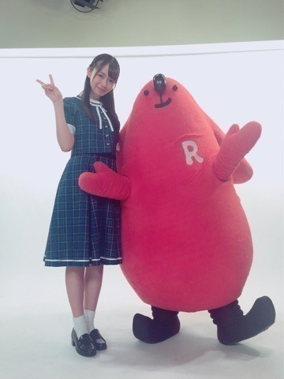
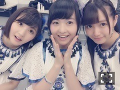

| 2016/09 01 Thu | ひめたん-0o0-その665 |
さて！！
らじらー！サンデー
3クール目に突入するということで
去年も書いたんですが改めて。
らじらー！サンデーは
毎週日曜日20:05～23:00
NHKラジオ第1にてお送りしています
生放送です、
うちの番組は鮮度に
めちゃめちゃこだわりを持ってます！！
放送中もスタッフさんが随時
呟いていたり(@nhk_radirer)、
パーソナリティもスタジオから
みなさんの呟きをチェックしてるので
是非ハッシュタグ#nhkらじらーをつけて
番組を一緒に盛り上げましょう(^o^)
スマホで視聴する場合は
スマートフォンアプリ「らじる★らじる」を
ダウンロードして下さいね～
そうそう、
この「らじる★らじる」に関して
皆さんにお伝えしたいことが！！
今まで東京・大阪・名古屋・仙台から
配信していたのですが
9月1日からさらに
札幌・広島・松山・福岡からも
配信スタートしました！
今まで以上に皆さんにとって
身近な存在になったと思います＼(^o^)／
私も広島出身として
このPRにムービーやラジオコメント等で
参加させていただいてます～♪
広島～＼(^o^)／
次回のらじらー！サタデーでは
札幌、松山、福岡の番組とのコラボ企画が、
そして我らがらじらー！サンデーでは
広島局「コイらじ」との
コラボ企画があるそうです～＊
何するんだろう
私も楽しみにしています(^o^)！

そんなわけで改めまして......
日曜の夜は、らじらー！サンデー
次回のゲストは声優アーツに下野紘さん、
乃木坂から伊藤万理華ちゃんと
井上小百合ちゃんが来てくれます。
募集中のメールテーマは
◯万理華、小百合への応援メッセージ
◯広島といえば......
◯自分の殻を打ち破れ！対決
◯ひとりノリひめたん
◯妄想ダイアリー
ゲスト2人なら
のほほんと女子会トークできると
てっきり思っていたのに
そうじゃないそうです、三つ巴です。笑
おたよりお待ちしてます！
宛先はこちら
3クール目もよろしくね！

明日 セブンライブ！
明後日 TGC！
明々後日 全握！
全握は純奈とペアです。初♡
初めましての方が
たくさんいらっしゃると思います
お久しぶりの方も多いはず。
ライブの感想や15thシングルのお話、
色々と聞かせて下さい～( ˇωˇ )
1日よろしくお願いします！

じゅんなびーむ
～お知らせ～
TV
9/10 H♪LINE
ラジオ
9/21 RadiPrism
イベント
9/23 東京国際ブックフェアトークショー
リリース
9/30 NOGIBINGO!6 BD&DVD
11/9 16thシングル
現在発売中のStreet Jackさんにて
連載「Hello me」に登場しました！
幼き頃の自分と
ツーショット撮ったみたいなやつo(^o^)o
あのページ好きだからずっと待ってたの～
私はカメラを向けられても
笑う子どもではなかったらしく、
いつも写真を選ぶのに困るのですが(笑)
良かったら見てみてください。
むさしのお弁当。広島に立ち寄ったら是非。
あ、そうそう
乃木坂工事中は観てくださったでしょうか
スキャットマン......ううあああーーー
(＊´・ω・＊)
コメント(780)
2016/09/01 23:42